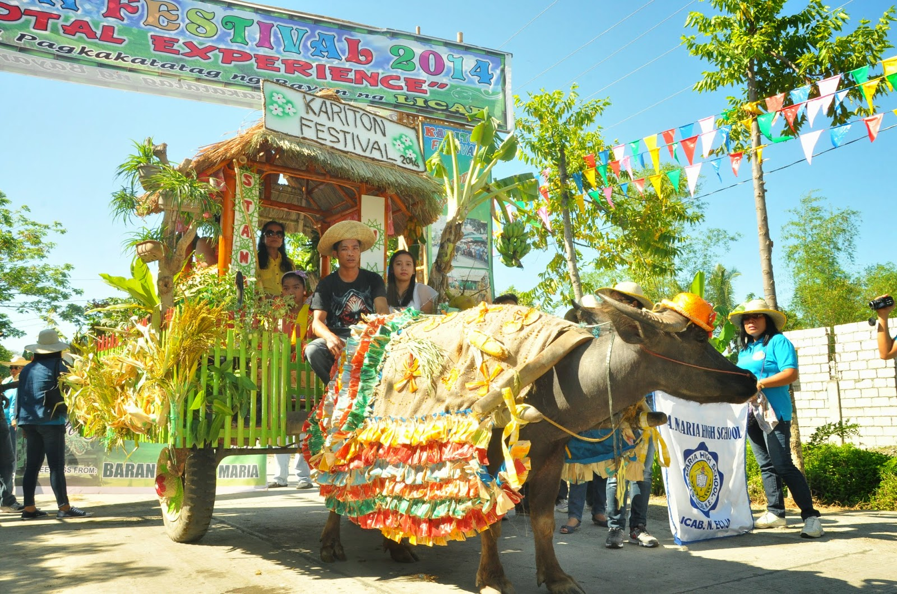
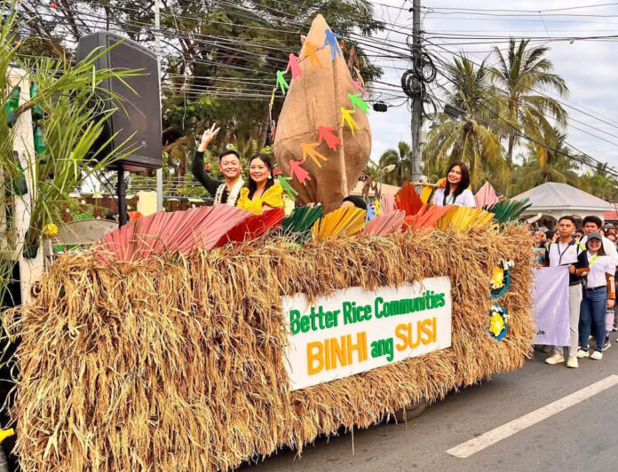
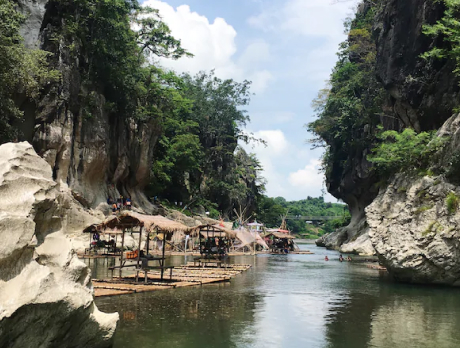
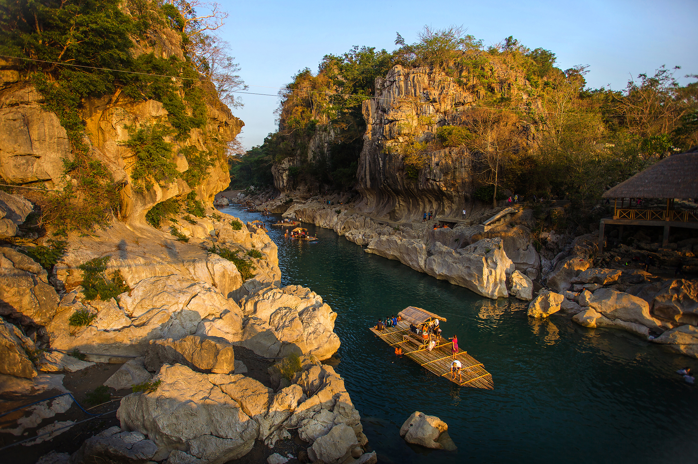
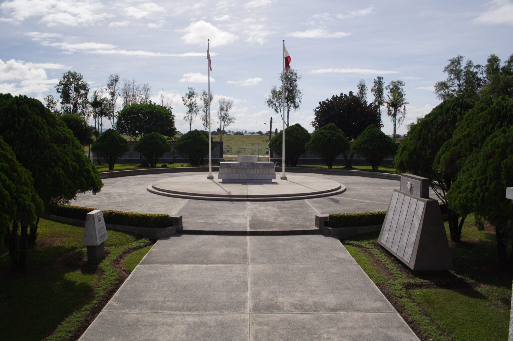
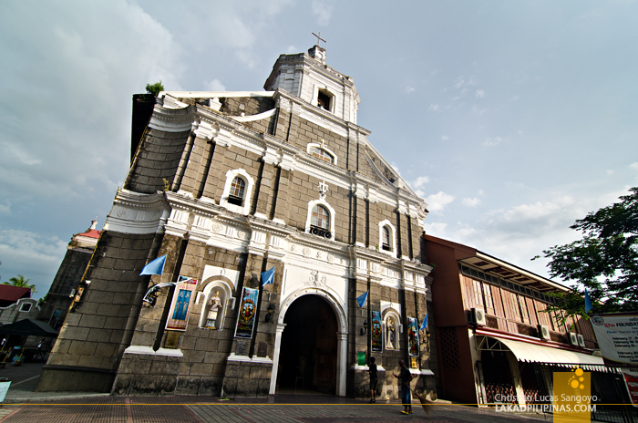
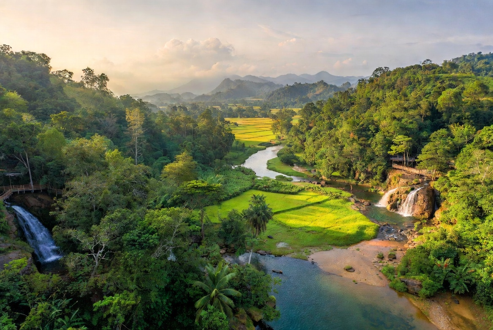

Taong Putik Festival (Bibiclat, Aliaga)
The Taong Putik Festival (Festival of Mud People) is one of the Philippines' most unusual and deeply spiritual celebrations, held every June 24 in Bibiclat, Aliaga in honor of San Juan Bautista (Saint John the Baptist). Devotees cover their bodies in mud and wear garments made of banana leaves, vines, and palm fronds as an act of penance and gratitude.
The festival traces its origins to a miraculous story during a cholera outbreak in the early 20th century, when the townspeople made a vow to honor San Juan Bautista if spared from the disease. It has since become a nationally recognized expression of faith and cultural identity.

Carabao Festival (May – San Isidro)
Celebrated every May 15 in honor of San Isidro Labrador, the patron saint of farmers, the Carabao Festival in Nueva Ecija is a joyful thanksgiving for the past harvest season and a prayer for the bountiful seasons ahead.
Farmers adorn their carabaos with colorful garlands, painted horns, and native decorations before parading them through the streets and kneeling them before the church — a deeply moving ritual that reflects the inseparable bond between the Filipino farmer and his most trusted partner in the field.

Rice Festival (Province-wide)
The Nueva Ecija Rice Festival is a province-wide celebration of the harvest season, showcasing the agricultural wealth that earns Nueva Ecija its title as the Rice Granary of the Philippines. The festival features agri-trade fairs, cooking competitions, and cultural shows.
Farmers, cooperatives, and agricultural institutions gather to display their finest rice varieties, celebrate innovations in farming technology, and honor the hardworking hands that feed the nation. It is a proud affirmation of Nueva Ecija's identity and its vital role in Philippine food security.
Discover Nueva Ecija
A journey through historic landmarks and natural wonders.
Must-Visit Destinations

Pantabangan Lake
Pantabangan, NE

Minalungao National Park
Gen. Tinio, NE

Cabanatuan War Memorial
Cabanatuan City

PhilRice Complex
Science City of Muñoz

Gapan Heritage Church
Gapan City

Laur Ecotourism Park
Laur, Nueva Ecija
About the Destination
Interactive Location
The Visionary of
Nueva Ecija
Meet the stewards of Nueva Ecija's development — leaders committed to modernizing agriculture, advancing rural welfare, and sustaining the province's role as the nation's rice bowl for generations to come.
Government Officials
Hon. Aurelio M. Umali
Hon. Emmanuel Antonio M. Umali
Hon. Mikaela Angela B. Suansing
Hon. Estrellita B. Suansing
Hon. Rosanna "Ria" Vergara
Hon. Belinda E. Palilio
Hon. Jason J. Abalos
Hon. Eric Daniel F. Salazar
Public Service Background
PROVINCE Overview
Key facts and geographic information about the Province of Nueva Ecija.